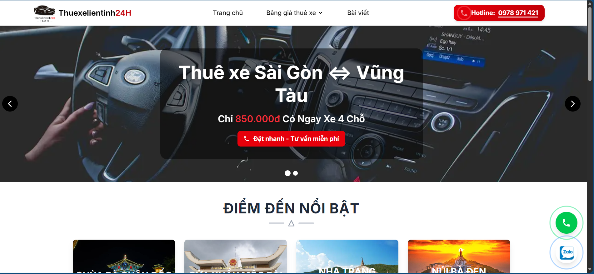
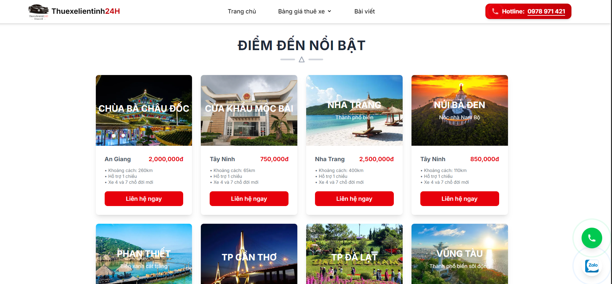
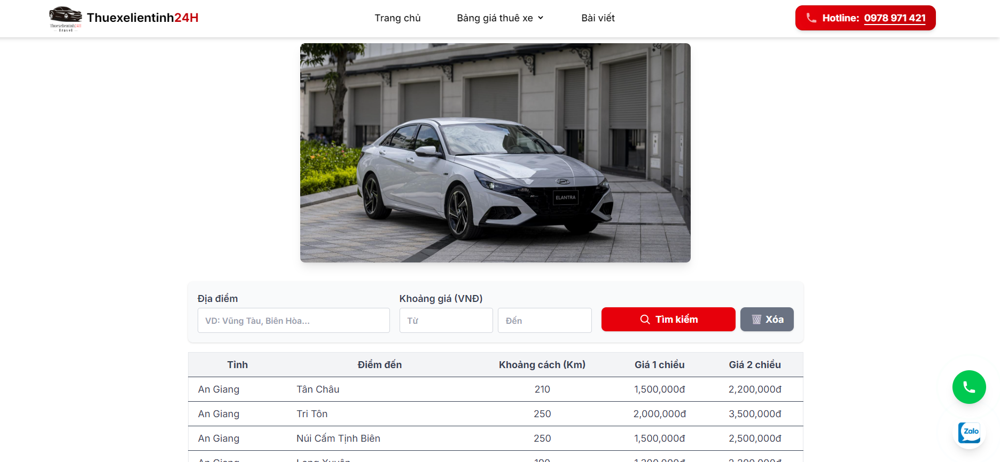
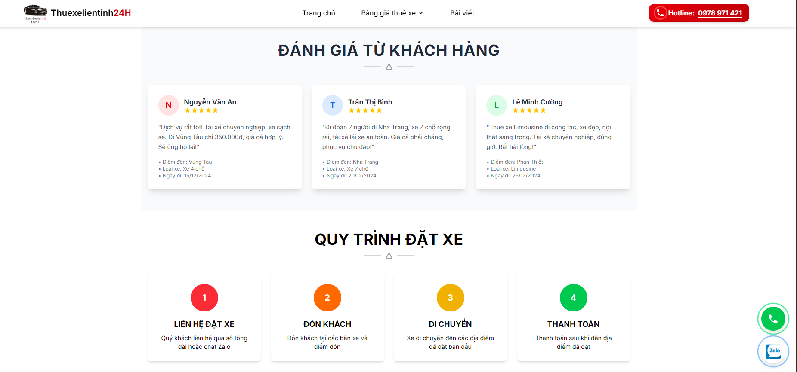

Platform
Web Application
Built with Next.js and Supabase.
Executive summary of scope, architecture, and production delivery.
Web Application
Built with Next.js and Supabase.
5 Capabilities
Search, pricing, booking, admin, and authentication.
Hybrid
Client-side filtering with server-side authentication.
O2O
Online discovery and booking initiation via Zalo.
Vercel Production
Cloud deployment for real client usage.
Business analysis summary tailored for portfolio and interview walkthrough.
This project was developed in collaboration with a real client, Nhut Truong Interprovincial Car Service, a transportation business providing long-distance vehicle rental services across provinces in Vietnam.
The system is designed as a lightweight O2O platform where customers can search for routes, view pricing, and initiate booking via Zalo instead of completing transactions within the system.
The primary goal is to improve business visibility, provide transparent pricing, and streamline customer interaction while keeping operational complexity low.
The solution is structured around practical capabilities that directly support O2O operations.
Key screens that validate search, pricing, admin, and O2O booking touchpoints.



